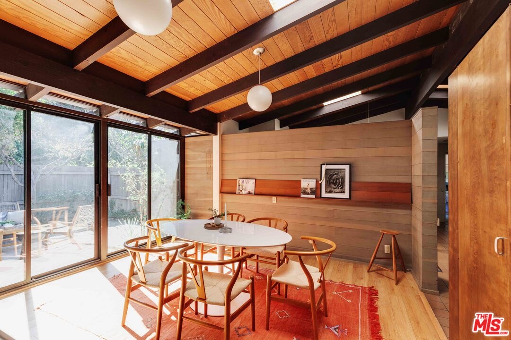
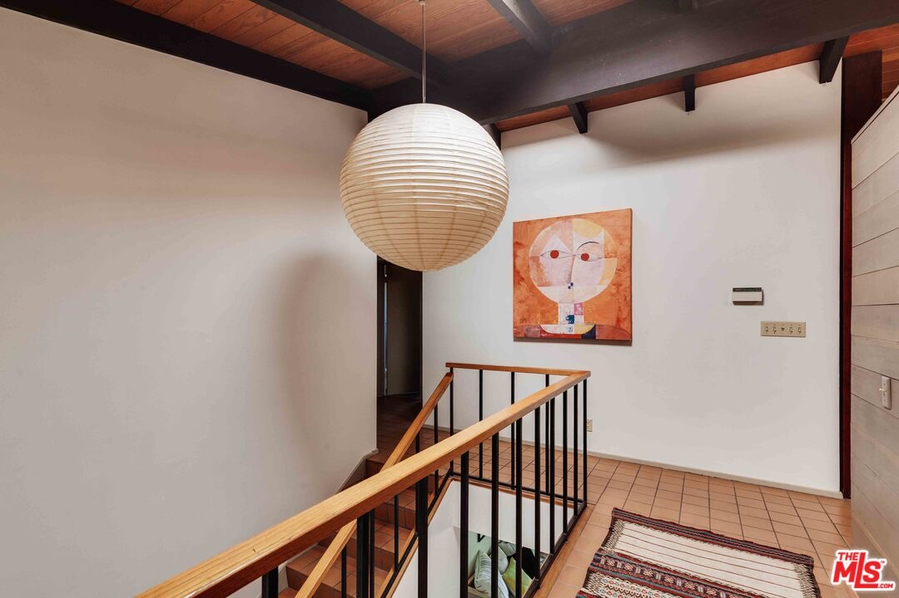
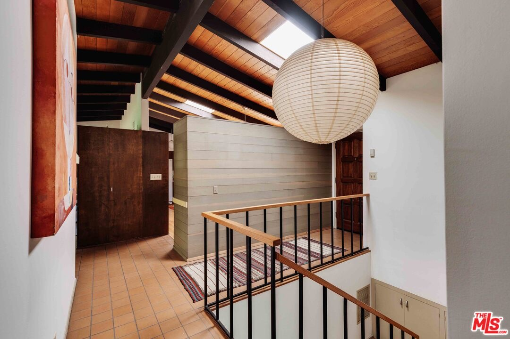
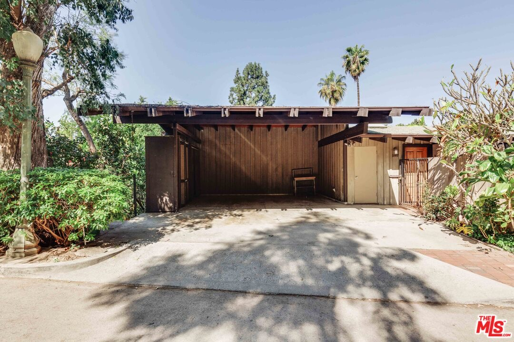

Obsession No. 026Silver Lake · Los Angeles
2449 Panorama Ter
You can feel when a house was designed by someone who planned to live inside every decision. Matsunaga built this one for his own family, and it still knows exactly how to hold a life.
Why it made the edit
“Matsunaga built this one for his own family, and it still knows exactly how to hold a life.”
You can feel when a house was designed by someone who planned to live inside every decision. Hideo A. Matsunaga built this one for his own family, and it still knows exactly how to hold a life.
The ceiling is all warm wood and dark beams, with skylights, built-ins, and sliding glass doors that make the rooms feel both grounded and open. There is a Japanese paper lantern at the stair, a garden beyond the glass, and the kind of thoughtful restraint that makes the house feel calm without ever feeling spare.
Built in 1962, this Silver Lake midcentury is 2,234 square feet with five bedrooms and two baths on a 4,748-square-foot lot, listed at $2,395,000. It is a house with the rarest kind of provenance: an architect's own point of view, made practical enough for family life and beautiful enough to keep noticing years later.



Want to see it in person?
Curious about this one?
Let’s talk.
Listed by Laura Martinez & Robert Kallick, Compass. House of Zonshine does not represent this listing. Property details are from listing information and public sources and should be independently verified.